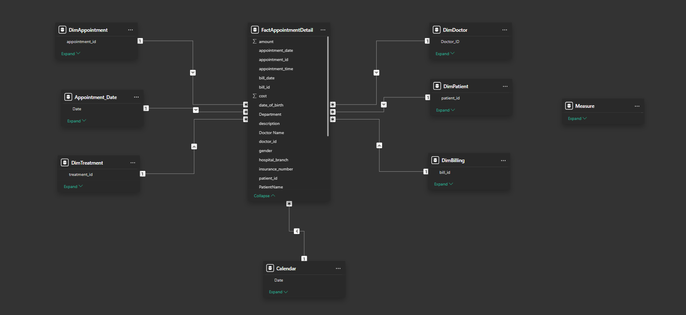

Evergreen Health Center Operations & Billing Analytics
A healthcare provider was losing time and revenue to no-shows, billing disputes and uneven doctor workloads. I modeled the data and built a three-page Power BI suite to make those problems visible.
- Dashboard pages
- 3
- KPI areas
- 6
- AI visuals
- 2
Walkthrough
Explore the dashboards
Power BI Desktop reports can't be embedded in a static site, so here is a screen recording of the dashboards in use, showing how the filters and visuals respond.
Operations dashboard: scheduling, appointment status and doctor utilization.
Business problem
Inefficiency that threatens patient-centered care
Evergreen Health Center's leadership wanted to protect its mission of accessible, transparent, high-quality care, but day-to-day operations were getting in the way. Management needed clear visibility into where the friction was coming from.
- High appointment no-shows and cancellations were reducing utilization.
- Billing and insurance disputes were delaying revenue collection.
- Inaccurate patient records were causing operational and billing errors.
- Doctor workload was uneven, leading to inefficiency and burnout risk.
- Current systems offered little visibility or control, putting financial stability and patient satisfaction at risk.
Approach
From hospital data to decision support
- Ingested and cleaned the dataStandardized appointment statuses, validated revenue categories and aligned the time dimensions, using Excel and SQL for validation.
- Modeled the relationshipsConnected appointments, revenue, doctors, departments and branches into one model and wrote the measures in DAX.
- Built the core dashboardsAn Operations dashboard for scheduling and utilization, and a Billing dashboard for revenue and payment analysis.
- Added AI-powered insightsA Q&A visual so executives can ask questions in plain language, and a decomposition tree to trace revenue problems to their root cause.
- Validated the numbersCross-checked KPI consistency across dashboards and made sure they matched stakeholder objectives.

What the suite measures
Six KPI areas, three dashboard pages
| KPI area | Problem it addresses |
|---|---|
| Access & scheduling efficiency | How well appointment slots are used and how quickly patients can be seen |
| Patient reliability & engagement | No-shows and cancellations that leave slots empty |
| Financial performance & cash flow | Revenue collected and how payments move through billing |
| Revenue risk exposure | Billing and insurance disputes that delay or leak revenue |
| Service line performance | Which departments and services drive results |
| Workforce utilization | Whether doctor workload is balanced across departments |
Operations and Billing pages
Management can see scheduling, utilization, revenue and payment status side by side, filtered by doctor, department or branch, and pinpoint where revenue leaks.
AI Insights page
Executives can type a question into the Q&A visual instead of building a report, and use the decomposition tree to break a revenue figure down by any dimension.
Outcome
What leadership gets
- Clear visibility into inefficiencies in scheduling, billing and staffing.
- A way to identify the points where revenue leaks.
- A data-driven foundation for operational improvements, with KPIs that stay consistent across every page.
More
Personal project built for learning and portfolio purposes, using a public hospital management dataset from Kaggle.